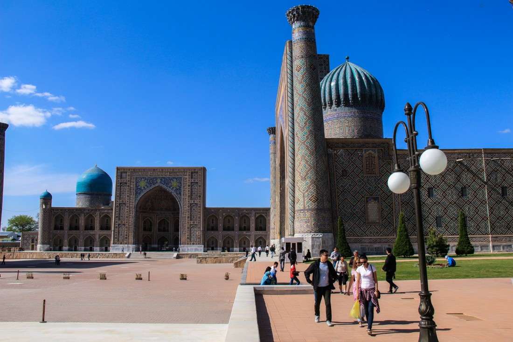
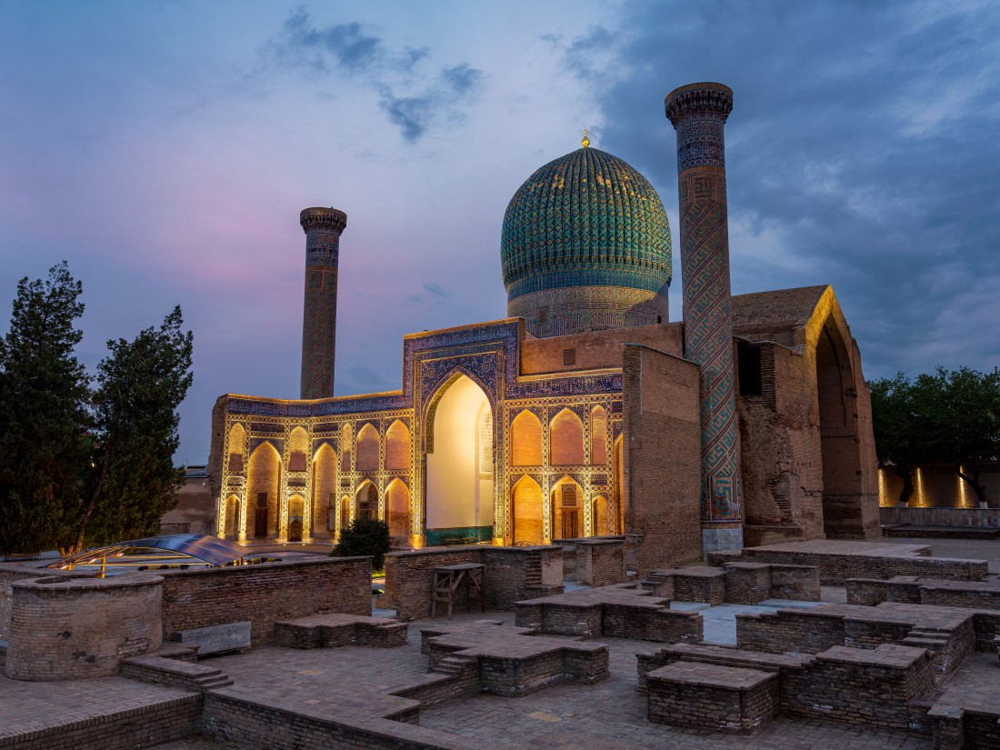
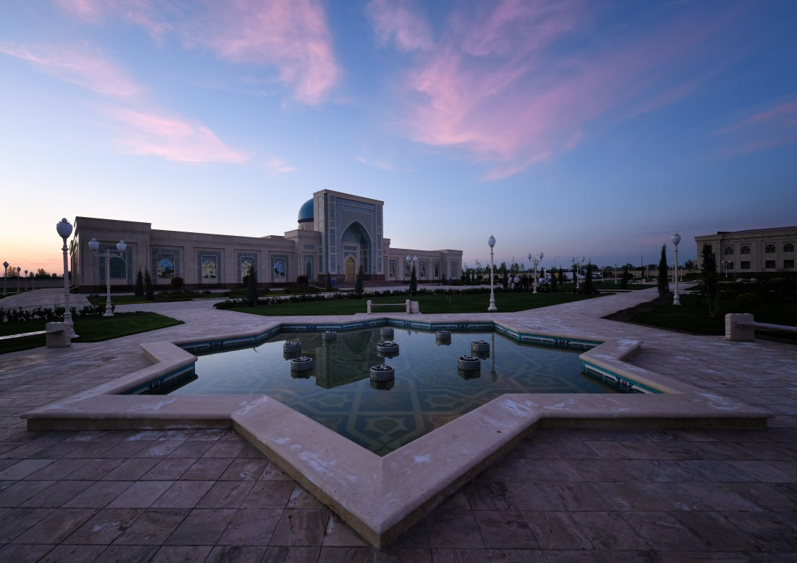

Самарканд – Перекрёсток культур
Самарканд поистине можно назвать уникальным городом!
Климат
Климат Самарканда имеет четко выраженную сезонность. Зима обычно мягкая и температура не часто падает ниже 0 °C. Так как резкие похолодания бывают очень редко и в основном ночью. Лето здесь очень жаркое, поэтому не забудьте прихватить с собой головной убор и солнцезащитные очки.
Подарки и сувениры
Самаркандские сувенирные лавки могут порадовать любителей подделок из дерева, ткани и прочих материалов. По традиции, большая часть мастерских находятся в старых медресе и все поделки делаются вручную местными мастерами. Но в Самарканде, помимо обычных сувениров, вы сможете найти еще несколько особенностей, которых не встретите в других регионах страны. Прежде всего советуем вам посетить Сиабский базар, который находится рядом с мечетью Биби-Ханум, практически в центре старого Самарканда. На этом базаре вы сможете найти огромное количество сухофруктов, орехов и сладостей. Среди всего прочего можно выделить вышеупомянутые лепешки и самаркандскую халву. Также в Самаркандской области есть бумажная фабрика называемая «Мерос». Ее мастера сохранили способ приготовления бумаги из тутовой коры. Этот способ зародился в X-XI века и отличался особой долговечностью. На этой фабрике вы сможете купить необычные бумажные подделки, такие как открытки, блокноты, маски, и даже платья, кукол и сумочки.
Кухня
В Самарканде, также как и в большинстве наших регионов основным блюдом является плов. Этот вид плова, как и бухарский не смешивают при готовке, что дает плову своеобразную диетичность. На самом деле эта диетичность заключается в том, что каждый может выбрать сколько моркови и мяса ему положить. Помимо плова, популярностью пользуются различные шашлыки, манты и особенно лепешки! Про Самаркандские лепешки ходят легенды, так как их можно хранить столько, сколько захотите, и они не зачерствеют и не покроются плесенью. Одна из легенд гласит, что один бухарский эмир очень любил самаркандские лепешки, да так, что постоянно приказывал привозить ему их. Но однажды, когда ему надоело каждый раз ждать свой заказ, он задумался над тем, как бы начать делать их в Бухаре. «Наверное надо привезти муку из Самарканда» подумал он. Но лепешки не получились. «Тогда надо привезти местную воду». Но опять неудача. «Наверное дело в глине! Надо привезти самаркандскую глину и сделать из нее тандыр!». Результат оставался тем же. «Может дело в мастерах? Мне нужен мастер из Самарканда!». Но даже самаркандский мастер не смог повторить этот вкус в Бухаре. После этого эмир забросил попытки и продолжал привозить любимое лакомство из Самарканда.На базарах Самарканда можно также найти огромное разнообразие фруктов овощей и орехов на любой вкус. Еще больше про Узбекскую Кухню Вы сможете прочитать по этой ссылке.
История
Самарканд можно только увидеть и остаться навечно пленённым, тем переплетением времени и различных культур, находящихся на его территории. Вы знали, что Самарканд является ровесником таких древних столиц мира как Рим и Нанкин? Да, да! Город появился примерно 2 750 лет назад, что дает ему право называться одним из самых древних городов не только Центральной Азии, но и мира. Пик процветания города приходится на времена правления Амира Тимура (Тамерлана) и его потомков.
В наше время Ташкент является современным мегаполисом и прекрасно совмещает в своей архитектуре и средневековые постройки, и современные бизнес центры. В городе есть все условия для прекрасного времяпровождения. Здесь сливается воедино многолетняя история и современный стиль жизни. На территории Ташкента работают два международных аэропорта и 2 железнодорожных вокзала. Одной из основных современных достопримечательностей города считается метро. Оно было открыто в 1977 году и является первым в Центральной Азии. Каждая станция имеет свой неповторимый дизайн и уникальную архитектуру.
Именно тогда Самарканд стал столицей его могучей империи. Существует легенда о том, как Тимур выбирал свою столицу… Для того, чтобы определиться с выбором, он приказал своим подданным проехать по всем городам и повесить на их воротах тушу барана и через месяц лично сделал обход. На всех воротах туши успели сгнить, и только на вратах Самарканда она была почти полностью целой и даже стала подвяленной. Увидев это Тимур сказал: «В этом городе самый чистый воздух и здоровая земля. Столица будет здесь!». Благодаря внуку Тамерлана, Мирзо Улугбеку, город стал центром мировой науки. Самарканд вошел в список «50 городов, которые стоит посетить в этой жизни».